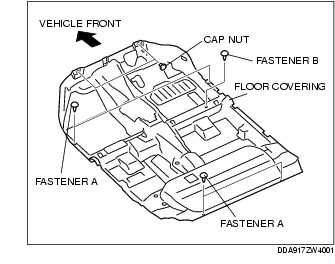

Floor covering removal/installation
1. Disconnect the negative battery cable.
2. Remove the front seat. (See FRONT SEAT REMOVAL/INSTALLATION.)
3. Remove the rear seat. (See REAR SEAT REMOVAL/INSTALLATION.)
4. Remove the dashboard. (See DASHBOARD REMOVAL/INSTALLATION.)
5. Remove the blower unit. (See BLOWER UNIT REMOVAL/INSTALLATION.)
6. Remove the B-pillar lower trims. (See B-PILLAR LOWER TRIM REMOVAL/INSTALLATION.)
7. Remove the foot rest on vehicles with a foot rest.
8. Remove the installation bolts on the lower part of the front seat belt.
9. Cut away the floor covering as shown in the figure.

10. Remove the tire house trim.

11. Remove the fasteners and the cap nuts.
12. Remove the floor covering through from the liftgate opening.
13. Install in the reverse order of removal.